AWARE aggregates compilation errors, warnings, and static analysis reports into a ranked listing of alerts. An alert is a notification to a software engineer, in the form of a warning message, of a potential problem, or fault in the source code that has been identified via compilation, or static analysis. The alerts are ranked by the probability that a particular alert is a true positive in the system. The alert ranking is adapted by programmer feedback in the form of filtering alerts found to be a false positive (the alert is not a fault in the system). The probability that a remaining alert is a true positive in the system is adjusted based on the filtered alerts.
Here you will find a screenshot tour of the AWARE installation process in Eclipse 3.x. These particular screens were captured in Eclipse 3.2 running on Windows XP.
If any version of FindBugs is already installed, you will have to uninstall FindBugs before installing AWARE. You can uninstall FindBugs from the Eclipse Help menu -> Software Updates -> Manage Configuration -> Expand your Eclipse SDK directory -> right click on FindBugs -> select Uninstall -> restart.
Begin the installation from the Eclipse Help menu item. Select Find and Install...
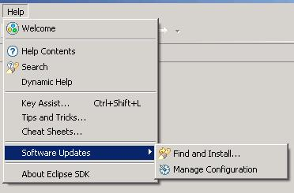
Search for new features to install and then click Next.
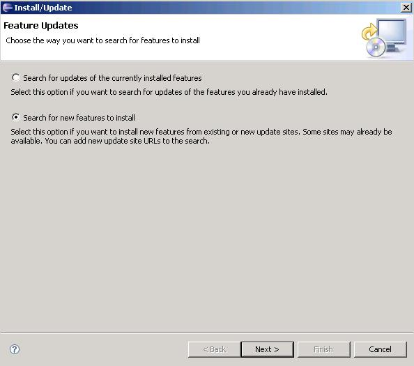
Click the 'New Remote Site' button to add a new remote site.
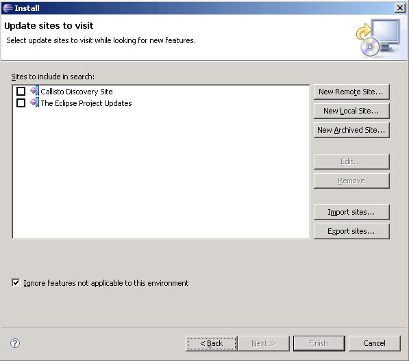
This screen is showing the New Remote Site dialog, filled in
with the correct information to install AWARE. Use the URL listed below and NOT the one in the picture, as that update site no longer works.
Name: AWARE
URL: http://agile.csc.ncsu.edu/aware/AWARE/Java/AWARE-UPDATE
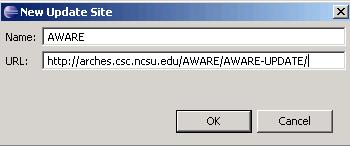
When you first come back to this screen, the site you added may NOT be selected. Be sure to select it before clicking Finish.
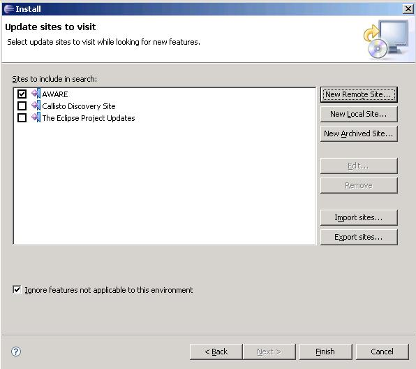
This next screen shows all of the features that are available for installation. This update site will also allow you to install the FindBugs feature if you do not have it already.
Check AWARE and then click 'Next'.
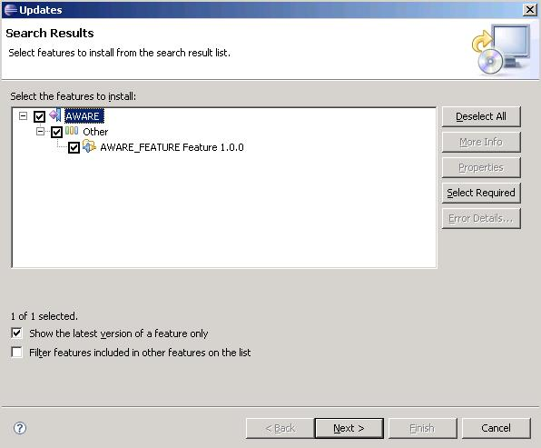
Select 'I accept...' and click next to accept the license agreement.
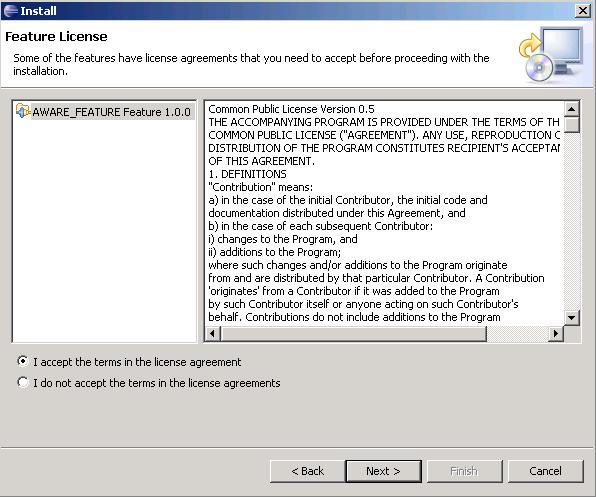
Click 'Change Location' and select C:\eclipse. Then click 'Finish'.
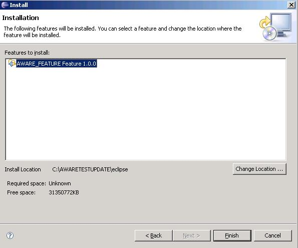
Click 'Install All'.
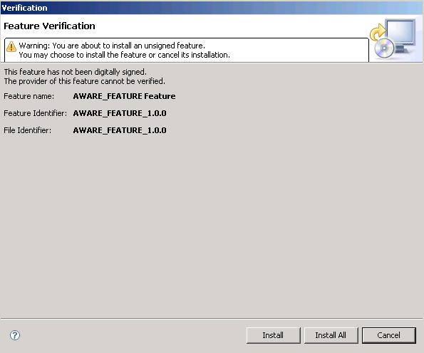
Click Yes to Restart the workbench.
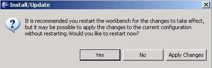
AWARE should now be installed.
Open the views from the Eclipse Window menu item. Select Other... under Show View
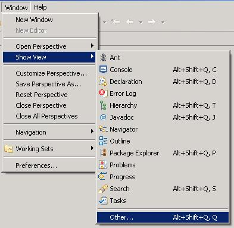
Expand the AWARE view folder and select all of the nodes beneath it and press OK.
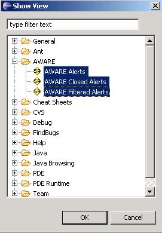
You should now see the open AWARE views in the view tray.
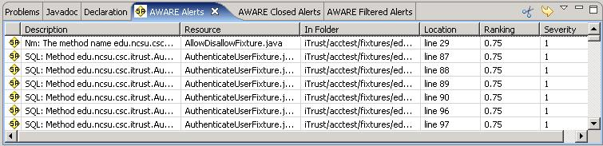
AWARE is currently bundled with the FindBugs static code analyzer Eclipse plug-in. We want FindBugs to run continuously while we work on our project. To enable this plug-in, right click on the iTrust project and select Properties.
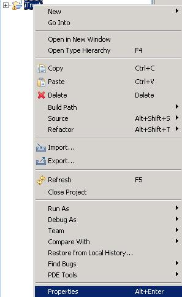
Select the FindBugs properties tab and then check 'Run FindBugs automatically'. Press OK. Leave the other settings on this tab as they are.
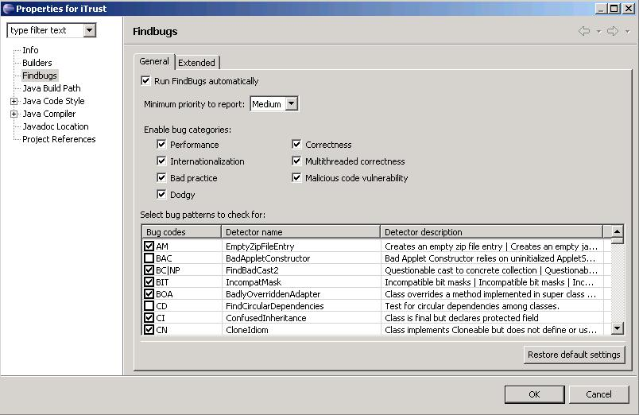
You should now see the bugs that Find Bugs discovered in your project under the 'Problems' tab.
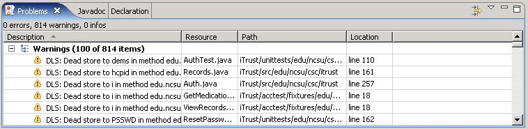
If you see an alert that you want to remove from the alert view, you can right click on the alert and choose Filter Alert, which sends the alert from the Alerts view to the Filtered Alerts View.
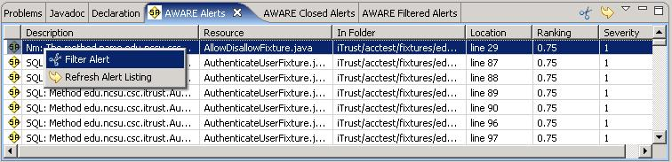
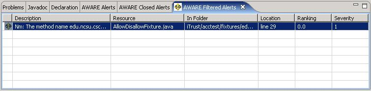
To unfilter an alert, you can right click on the alert and choose UnFilter Alert
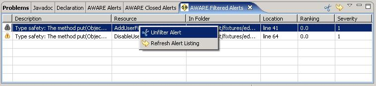
If you want to see the line of code that is marked with an alert, you can double click that alert in the Alerts view and AWARE will bring up the line of code the alert references.
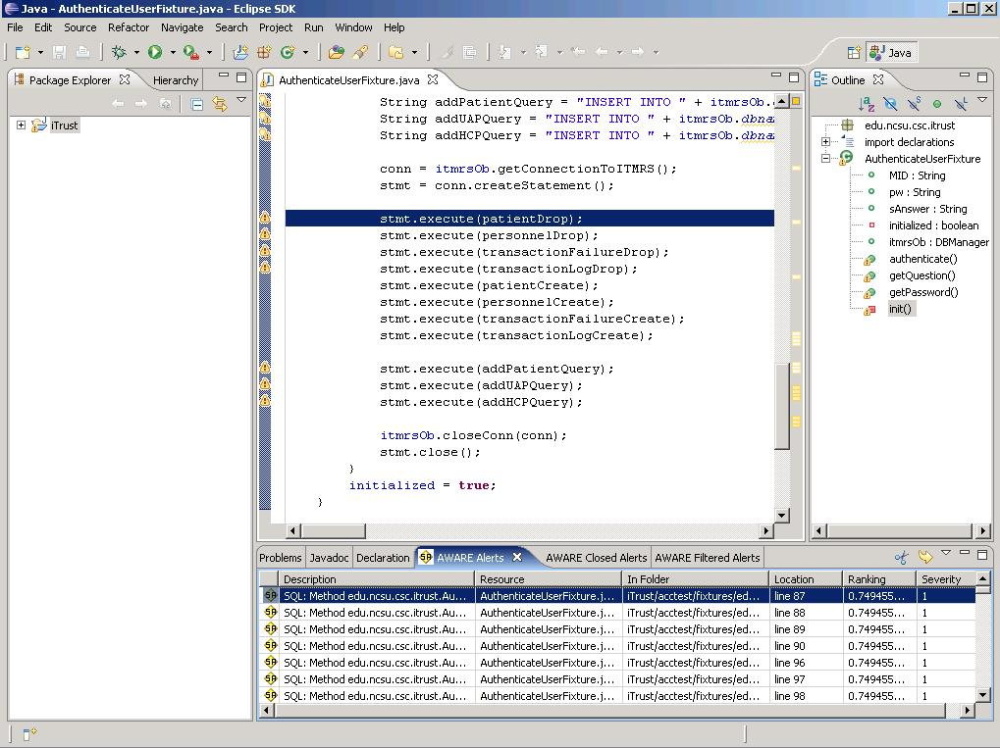
When you fix an alert, the alert will disappear from the Alerts view and will be added to the Closed Alerts view. The figure below demonstrates several alerts that have been fixed.
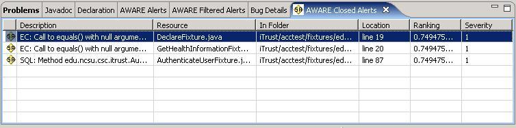
Finally, when you are done working on your project, close Eclipse and wait a minute before attempting to log off from your computer, as AWARE is updating your Alert database with your most recent code changes.
Some Windows based machines running AWARE may encounter
memory errors, which are caused by not having enough memory allocated to the
workspace. To allocate more memory to your workspace, we recommend
starting Eclipse with the following command (syntax may change based on OS):
java -Xmx512M -jar C:\Eclipse\startup.jar (this command assumes that Eclipse is
installed in the C:\Eclipse\ directory.